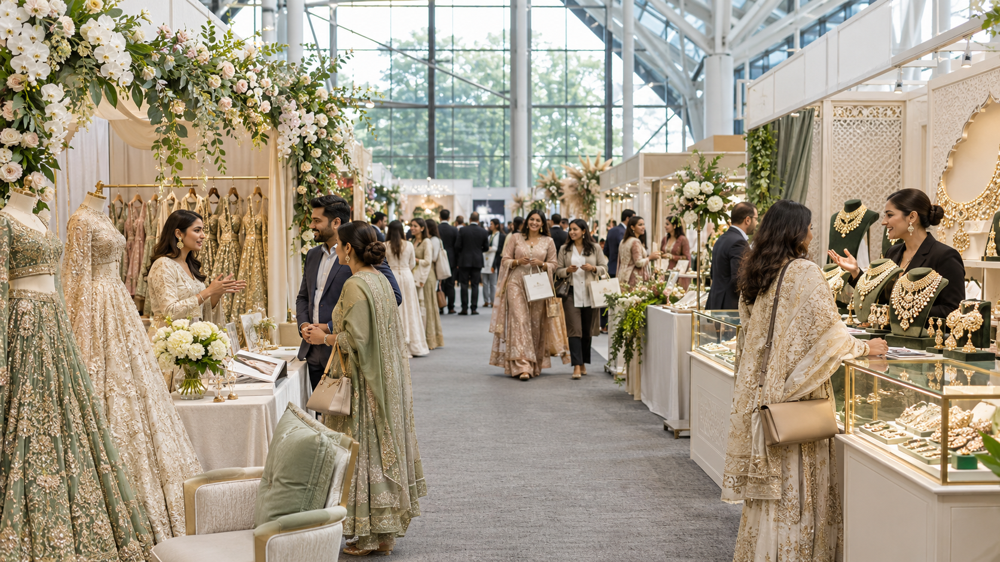

I manage projects from initial planning through supplier coordination, on-site delivery and post-event completion. My experience spans exhibitions, international fashion shows, awards ceremonies, brand launches, business forums and networking events.
£30k–£50kTypical event budgets I manage
2–12 monthsProject planning horizons
Budget figures describe my usual responsibility, rather than the budget of any individual event.
Plan with purposeProject schedules, resource plans, risk registers and operational runbooks.
Control the detailVenue research, site inspections, supplier assessment, quotation comparisons and negotiation.
Bring teams togetherClient, venue, exhibitor, designer and supplier communication across concurrent workstreams.
See delivery throughSetup, technical checks, live operations, dismantling, venue handover and post-event reviews.
02 / SELECTED WORK
From exhibition floors to international runways.
Four project perspectives. Clear personal responsibility.
01 / EXHIBITION2025

AI-generated illustration · not an event photograph
CHELMSFORD CITY RACECOURSE · ESSEX
Asian Wedding Collective
A two-day wedding exhibition bringing together nearly 50 vendors and designers across bridal fashion, jewellery, décor, photography, catering and wedding services.
My remit
Project Manager responsible for planning, venue and supplier coordination, exhibitor arrangements, budget oversight, live delivery and completion.
Delivery responsibility
I coordinated the venue, suppliers and exhibitor requirements across the planning and live delivery stages, keeping cost, quality and deadlines in view through completion.
Supported outcome
Delivery of a two-day showcase serving a broad mix of wedding businesses and creative participants.
ONE COMBINED PROGRAMME The following runway and awards case studies describe connected parts of the same programme at Hilton London Metropole.
02 / INTERNATIONAL RUNWAY2026AI-generated illustration · not an event photograph
HILTON LONDON METROPOLE
Nexus Bridal Runway Global
An international bridal fashion showcase involving designers, models and creative production teams, delivered within the combined runway and awards programme.
My remit
I led project delivery and coordinated the venue, suppliers and participants.
Delivery responsibility
I brought venue, supplier and participant requirements into the delivery plan and coordinated the people and resources involved in the live showcase.
Supported outcome
Delivery of the international bridal showcase as an integrated part of the wider programme.
AI-generated illustration · not an event photograph
RADISSON BLU · LONDON HEATHROW
Grand Asian Collective with Asian Influencer Awards
Delivered in October 2026, this exhibition featured 20+ vendors alongside an influencer awards ceremony and networking programme.
My remit
I managed planning, venue and supplier coordination, exhibitor requirements and on-site delivery.
Delivery responsibility
I coordinated exhibitor needs with venue and supplier arrangements and managed on-site delivery across the exhibition, awards and networking programme.
Supported outcome
Delivery of a programme combining business exhibition, industry recognition and networking.
Event title and details supplied by Sachu; no matching official reference linked.
Event context is drawn from the linked organiser pages where available; personal responsibilities are supplied by Sachu. This is an independent professional portfolio, not an official CS Nexus website. Company photographs and logos are not reproduced.
03 / JUDGEMENT IN PRACTICE
Calm decisions. Practical action.
LIVE EVENT SAFETY
Responding to a weather-related hazard
S / SITUATION
During a live event, rain created a safety hazard around a vendor area, including an overhead concern.
T / TASK
As Project Manager, I needed to address the hazard and coordinate the response with the hotel.
A / ACTION
I called the hotel team, arranged warning signs and cleaning, and relocated the affected vendors.
R / RESULT
The vendors were moved away from the affected area while the hotel team addressed the hazard.
04 / COMMERCIAL OWNERSHIP
Operational detail. Financial perspective.
Alongside my events contract, I work full-time as Operational Lead Manager and a founding team member at sister company Centurion Staunch Innovative Solutions Ltd.
I cost and price wider client projects valued at approximately £30,000–£100,000, translate requirements into delivery budgets, allocate resources, prepare profit and loss and cash flow statements, and authorise expenditure within agreed limits.
These wider company project values are distinct from my typical £30,000–£50,000 event budgets.
PROBLEM-SOLVING / FINANCIAL CONTROL
Helping restore financial stability
The challenge
A 20% project budget overrun and loss-making company operations.
My contribution
I tightened budget planning and expenditure controls, supported by weekly and monthly management reviews.
The outcome
I helped the company move from loss-making operations to break-even within eight months. This was a contribution to a wider company result.
05 / EXPERIENCE & DEVELOPMENT
A foundation in operations. A focus on events.
Project Manager – Events and Programme Delivery
CS Nexus · London · Contract
End-to-end event management across concurrent workstreams, from planning and budgets to live operations and completion. Positive feedback and repeat bookings received across my events work.
Contract engagement alongside full-time employment with sister company Centurion Staunch Innovative Solutions Ltd.
Operational Lead Manager, Founding Team
Centurion Staunch Innovative Solutions Ltd · London
I assumed day-to-day operational leadership following the Head of Operations’ departure. I oversee five direct reports across sales, marketing, physiotherapy and country management in India and Bangladesh, plus two freelance consultants.
I coordinate workforce forecasts, supplier coverage and roster scheduling, and built a staff management and KPI tracking system within the company admin portal.
Operational Flight Dispatcher / Load Controller
Menzies Aviation · London Heathrow
As Acting Supervisor, allocated 30+ staff to flights using RSMS and WorkBridge. Coordinated replacements, overtime, aircraft turnarounds and loading instructions, with responsibility for weight and balance documentation and regulatory and dangerous goods compliance.
Developed calm decision-making and clear communication in time-critical conditions.
Operational and Planning Roles
Swissport, FedEx, Bluebird Care & Signature Flatbreads
Part-time work alongside postgraduate study, supporting aviation coordination, logistics and production planning.
Business Analyst – Operations
RYDBERG Engineering · Kozhikode, India
Delivered a transformation programme reducing process lead time by 20%.
Partner – Operations and Business Execution
Sudharamaja Pvt. Ltd. · Kochi, India
Handled trade union engagement and collective agreements, and conducted supplier quality checks for a skincare and cosmetics business.
Qualifications & development
MBA University of Bedfordshire · June 2021–July 2022
ME, Automobile Engineering Chandigarh University · August 2017–July 2019
PRINCE2® 7 Foundation in Project Management PeopleCert · February 2026
AI Generalist Accelerator Outskill · July 2026
Tools I work with
Excel · Power Query · Power BI · Tableau · Asana · Trello · Zoho One · RSMS · WorkBridge · Superjoin · Numerous AI · n8n
Languages
English · Hindi · Tamil · Malayalam
06 / LET’S CONNECT
Ready for the next programme.
Open to International Events Project Manager opportunities with UK employers.